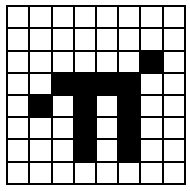

The letters, digits, punctuation marks and so on that can appear in strings are called characters, and they make up the alphabet, or character set, that the ZX Spectrum uses. Most of these characters are single symbols, but there are some more, called tokens, that represent whole words, such as PRINT, STOP, <> and so on.
There are 256 characters, and each one has a code between 0 and 255. There is a complete list of them in Appendix A. To convert between codes and characters, there are two functions, CODE and CHR$.
CODE is applied to a string, and gives the code of the first character in the string (or 0 if the string is empty).
CHR$ is applied to a number, and gives the single character string whose code is that number.
This program prints out the entire character set:
10 FOR a=32 TO 255: PRINT CHRS a;: NEXT a
At the top you can see a space, 15 symbols and punctuation marks, the ten digits, seven more symbols, the capital letters, six more symbols, the lower case letters and five more symbols. These are all (except £ and ©) taken from a widely-used set of characters known as ASCII (standing for American Standard Codes for Information Interchange); ASCII also assigns numeric codes to these characters, and these are the codes that the ZX Spectrum uses.
The rest of the characters are not part of ASCII, and are peculiar to the ZX Spectrum. First amongst them are a space and 15 patterns of black and white blobs. These are called the graphics symbols and can be used for drawing pictures. You can enter these from the keyboard, using what is called graphics mode. If you press GRAPHICS (CAPS SHIFT with 9) then the cursor will change to G. Now the keys for the digits 1 to 8 will give the graphics symbols: on their own they give the symbols drawn on the keys; and with either shift pressed they give the same symbol but inverted, i.e. black becomes white, and vice versa.
Regardless of shifts, digit 9 takes you back to normal (L) mode and digit 0 is DELETE.
Here are the sixteen graphics symbols:
After the graphics symbols, you will see what appears to be another copy of the alphabet from A to U. These are characters that you can redefine yourself. although when the machine is first switched on they are set as letters - they are called user-defined graphics. You can type these in from the keyboard by going into graphics mode, and then using the letters keys from A to U.
To define a new character for yourself, follow this recipe - it defines a character to show π.
Work out what the character looks like. Each character has an 8x8 square of dots, each of which can show either the paper colour or the ink colour (see the introductory booklet). You'd draw a diagram something like this, with black squares for the ink colour:
We've left a 1 square margin round the edge because the other letters all have one (except for lower case letters with tails, where the tail goes right down to the bottom).
BIN 00000000
BIN 00000000
BIN 00000010
BIN 00111100
BIN 01010100
BIN 00010100
BIN 00010100
BIN 00000000
(If you know about binary numbers, then it should help you to know that BIN is used to write a number in binary instead of the usual decimal.)
These eight numbers are stored in memory, in eight places, each of which has an address. The address of the first byte, or group of eight digits, is USR "P" (P because that is what we chose in (ii)), that of the second is USR "P"+1, and so on up to the eighth, which has address USR "P"+7.
USR here is a function to convert a string argument into the address of the first byte in memory for the corresponding user-defined graphic. The string argument must be a single character which can be either the user-defined graphic itself or the corresponding letter (in upper or lower case). There is another use for USR, when its argument is a number, which will be dealt with.
Even if you don't understand this, the following program will do it for you:
10 FOR n=0 TO 7
20 INPUT row: POKE USR "P"+n,row
30 NEXT n
It will stop for INPUT data eight times to ailow you to type in the eight BIN numbers above - type them in the right order, starting with the top row.
The POKE statement stores a number directly in memory location, bypassing the mechanisms normally used by the BASIC. The opposite of POKE is PEEK, and this allows us to look at the contents of a memory location although it does not actually alter the contents of that location. They will be dealt with properly in Chapter 24.
After the user-defined graphics come the tokens.
You will have noticed that we have not printed out the first 32 characters, with codes 0 to 31. These are control characters. They don't produce anything printable, but have some less tangible effect on the television, or they are used for controlling something other than the television, and the television prints ? to show that it doesn't understand them. They are described more fully in Appendix A.
Three that the television uses are those with codes 6, 8 and 13; on the whole, CHR$ 8 is the only one you are likely to find useful.
CHR$ 6 prints spaces in exactly the same way as a comma does in a PRINT statement for instance
PRINT 1; CHR$ 6;2does the same asPRINT 1,2
Obviously this is not a very clear way of using it. A more subtle way is to say
LET a$="1"+CHR$ 6+"2"
PRINT a$
CHR$ 8 is 'backspace': it moves the print position back one place - try
PRINT "1234"; CHR$ 8;"5"
which prints up 1235
CHR$ 13 is 'newline': it moves the print position on to the beginning of the next line.
The television also uses those with codes 16 to 23; these are explained in Chapters 15 and 16. All the control characters are listed in Appendix A.
Using the codes for the characters we can extend the concept of 'alphabetical ordering' to cover strings containing any characters, not just letters. If instead of thinking in terms of the usual alphabet of 26 letters we use the extended alphabet of 256 characters, in the same order as their codes, then the principle is exactly the same. For instance, these strings are in their ZX Spectrum alphabetical order. (Notice the rather odd feature that lower case letters come after all the capitals: so "a" comes after "Z"; also, spaces matter.)
CHR$ 3+"ZOOLOGICAL GARDENS"
CHR$ 8+"AARDVARK HUNTING"
" AAAARGH!"
"(Parenthetical remark)"
"100"
"129.95 inc. VAT"
"AASVOGEL"
"Aardvark"
"PRINT"
"Zoo"
"[interpolationl]"
"aardvark"
"aasvogel"
"zoo"
"zoology"
Here is the rule for finding out which order two strings come in. First, compare the first characters. If they are different, then one of them has its code less than the other, and the string it came from is the earlier (lesser) of the two strings. If they are the same, then go on to compare the next characters. If in this process one of the strings runs out before the other, then that string is the earlier, otherwise they must be equal.
The relations =, <, >, <=, >= and <> are used for strings as well as for numbers: < MEANS 'comes before' AND > means 'comes after', so that
"AA man"<"AARDVARK"
"AARDVARK">"AA man"
are both true.
<= AND >= work the same way as they do for numbers, so that
"The same string"<="The same string"
is true, but
"The same string"<"The same string"
is false.
Experiment on all this using the program here, which inputs two strings and puts them in order.
10 INPUT "Type in two strings:", a$, b$
20 IF a$>b$ THEN LET c$=a$: LET a$=b$: LET b$=c$
30 PRINT a$;" ";
40 IF a$<B$ THEN PRINT "<";: GO TO 60
50 PRINT "="
60 PRINT " ";B$
70 GO TO 10
Note how we have to introduce c$ in line 20 when we swap over a$ and b$,
LET a$=b$: LET b$=a$
would not have the desired effect.
This program sets up user-defined graphics to show chess pieces:
P for pawn R for rook N for knight B for bishop K for king Q for queen
Chess pieces:
5 LET b=BIN 01111100: LET c=BIN 00111000: LET d=BIN 00010000
10 FOR n=1 TO 6: READ p$: REM 6 pieces
20 FOR f=0 TO 7: REM read piece into 8 bytes
30 READ a: POKE USR p$+f,a
40 NEXT f
50 NEXT n
100 REM bishop
110 DATA "b",0,d, BIN 00101000,BIN 01000100
120 DATA BIN 01101100,c,b,0
130 REM king
140 DATA "k",0,d,c,d
150 DATA c, BIN 01000100,c,0
160 REM rook
170 DATA "r",0, BIN 01010100,b,c
180 DATA c,b,b,0
190 REM queen
200 DATA "q",0, BIN 01010100, BIN 00101000,d
210 DATA BIN 01101100,b,b,0
220 REM pawn
230 DATA "p",0,0,d,c
240 DATA c,d,b,0
250 REM knight
260 DATA "n",0,d,c, BIN 01111000
270 DATA BIN 00011000,c,b,0
Note that 0 can be used instead of BIN 00000000.
When you have run the program, look at the pieces by going into graphics mode.
Exercises
Run this program:
10 INPUT a
20 PRINT CHR$ a;
30 GO TO 10
If you experiment with it, you'll find that CHR$ a is rounded to the nearest whole number; and if a is not in the range 0 to 255 then the program stops with error report B integer out of range.
Which of these two is the lesser?
"EVIL"
"evil"